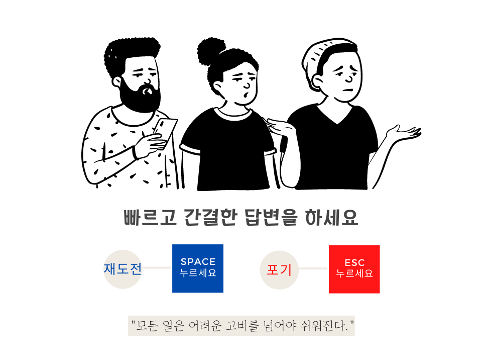

모든 문제를 다 해결하셨습니다.
당신의 비지니스에 대해 좀 더 아시는 아시는 시간이 되셨나요? 행운을 빕니다 :)
당신의 삶과 커리어를 위한 콘텐츠
s커리어팁
창업가를 위한 리소스가 가득한 홈페이지도 놀러오세요!
Timer

팁 :
키보드를 이용하세요
space
시간 추가하기
enter
답변 성공
esc
그만두기
Please enable JavaScript to view the
comments powered by Disqus.